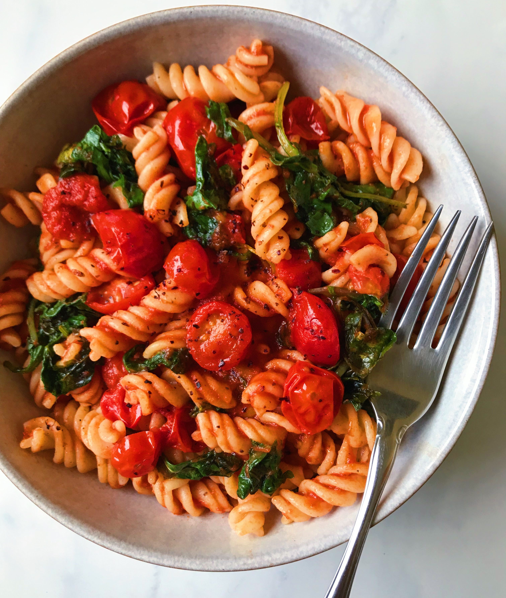

Pasta with vegetables and Marinara Sauce

Description
This recipe will let you create a delicious, healthy pasta dish, for four people
Time to prepare - 15 minutes
Time to cook - 30 minutes
Spice level - 🌶
Ingredients
- 500 gram whole ripe tomatoes
- 6-7 large cloves garlic
- 1 small onion
- 1/4 cup diced green pepper
- 2 tablespoons extra-virgin olive oil
- 1 tsp dried oregano
- 1 tsp dried thyme
- 1 tsp dried basil
- 1/2 tsp chilli flakes
- 1/2 tsp ground black pepper
- 1 tsp sugar
- Salt to taste
- 400g penne pasta
- A handfull of chopped fresh basil to garnish
Steps
Making the Tomato Puree
- Remove the core from the top of the tomato
- Make a cross in the bottom of the tomato and plunge into boiling water for 15 seconds
- Remove the tomato from the water and peel. The skin should come away easily
- Cook the blanched tomatoes in a medium, heavy-bottomed saucepan for 5 minutes
- Blend the cooked tomatoes into a puree
Making Marinara Sauce
- In another pan , warm the extra virgin olive oil over medium heat
- Add onions and saute until soft and transparent
- Add chopped garlic and stir fry for a few minutes till fragrant and light golden in color
- Add the chopped green pepper and saute for a few minutes more
- Add the dried herbs, chili flakes and salt
- Saute well for a minute
- Finally, add the tomato puree and bring to simmer
Cooking the pasta
- Put 1 litre of water in a medium, heavy-bottomed saucepan
- Add a tsp of salt and a splash of olive oil
- Place on a high heat and bring the water to the boil
- Add the penne pasta, stir to stop the pasta sticking and bring back to the boil
- Simmer for 10-12 minutes, until the pasta is al dente
- Remove the pan from the heat and drain the pasta
To serve
- Mix the sauce with the pasta
- Dish up
- Add the chopped fresh basil to garnish
ol>